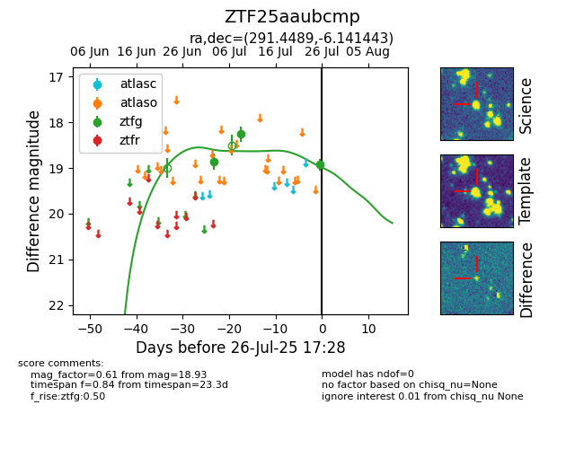

Target ZTF25aaubcmp at 2025-07-26 17:28, see:
FINK: fink-portal.org/ZTF25aaubcmp
Lasair: lasair-ztf.lsst.ac.uk/objects/ZTF25aaubcmp
ALeRCE: alerce.online/object/ZTF25aaubcmp
alt names
ZTF25aaubcmp (ztf,fink)
coordinates:
equatorial (ra, dec) = (291.4489,-6.14144)
galactic (l, b) = (31.3295,-10.42463)
photometry
last ztfg=18.93
3 ztfg detections
